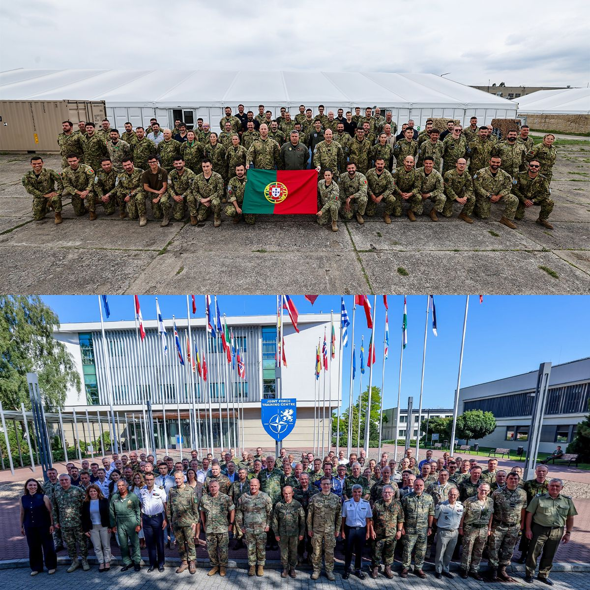
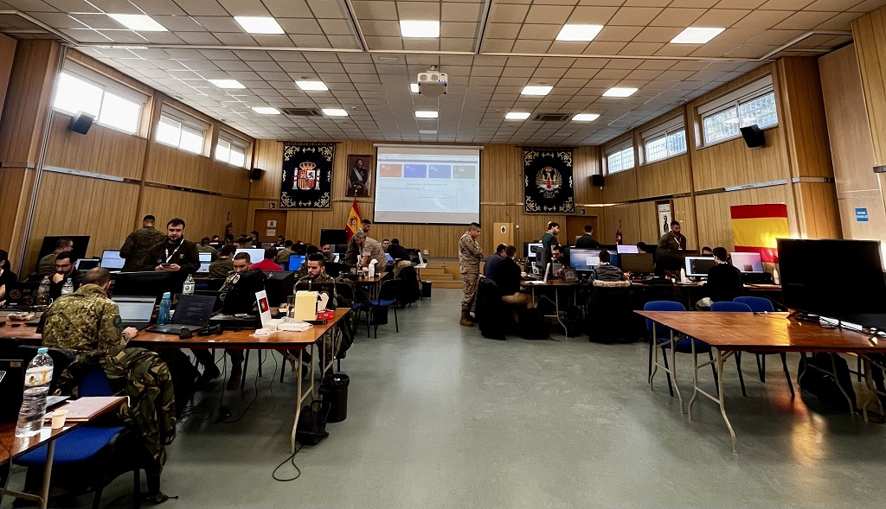
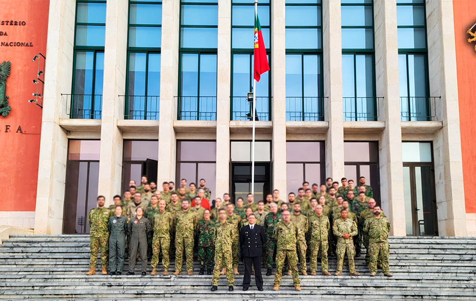
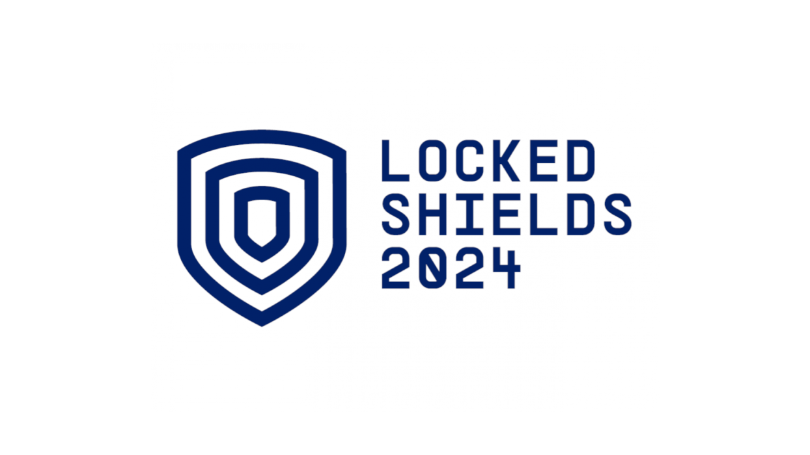

6 a 27 de junho, 2026
Tive a honra de integrar a equipa de Service Desk no CWIX 2026, o maior exercício de interoperabilidade da NATO. Ao longo de três semanas assegurei o apoio técnico e a resolução de incidentes, garantindo o funcionamento contínuo dos sistemas e a cooperação entre as várias nações participantes.

8 a 11 de Fevereiro, 2026
Foi com grande orgulho que tive a oportunidade de representar Portugal desta vez no exercício V2CN, em Madrid, Espanha.

28 de novembro a 4 de dezembro, 2025
Orgulhoso por ter participado no exercício NATO Cyber Coalition 2025, contribuindo para o reforço da cooperação internacional e da resiliência em ciberdefesa. Uma experiência exigente e extremamente enriquecedora.

23 a 26 de abril, 2024
Participei, a partir de Portugal, no Locked Shields 2024, o maior exercício internacional de ciberdefesa organizado pelo NATO Cooperative Cyber Defence Centre of Excellence, reforçando competências de defesa, coordenação e resposta a incidentes em ambiente de alta pressão.